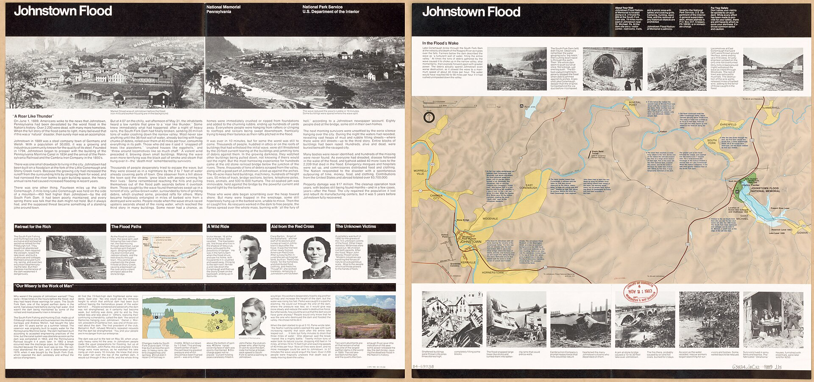

Chapter 23
The Centennial Reckoning at Johnstown
Seen from above, the route was a scar connecting emptiness above to memory below. The Little Conemaugh River dropped nine hundred feet in fourteen miles, from the empty reservoir basin above South Fork to the confluence at Point Park in Johnstown. The basin at the top was dry grass and broken stone where the South Fork dam had stood. The stream wound past South Fork, Mineral Point, East Conemaugh, and the site where Woodvale had been. It joined the Stonycreek at Johnstown, where the stone bridge still stood and an eternal flame burned at the corner of the park. The land had been rebuilt twice. The water had come through twice. The form in the filing cabinet in Harrisburg said who owned each dam along the route. The form did not say whether anyone had read it.
In a conference room in Johnstown in 1986, a group met to plan the centennial. Local historians, officials from the Johnstown Area Heritage Association, and staff from the National Park Service sat at the table. The Park Service had administered the Johnstown Flood National Memorial at the dam site since Congress authorized it in 1964. The memorial preserved the remnants of the South Fork dam. The earthen abutments flanked the gap. The spillway showed its outline. The lakebed was a meadow. The site drew visitors, but not many.

The centennial in 1989 was supposed to change that. The planners faced a question the legal system had never answered. The disaster of May 31, 1889, had killed at least 2, 209 people. Survivors of the flood had been unable to recover damages in court because it was difficult for any suit to prove that any of the South Fork Club’s owners had behaved negligently. No court had held the South Fork Fishing and Hunting Club liable. The survivors had sued. The Pennsylvania courts had dismissed the cases. The club members had paid nothing.
The planners had to decide how to narrate a catastrophe whose legal record was a dead end.
The answer determined what kind of event the centennial would commemorate. If the flood was an act of God, the centennial was a memorial service. If the flood was a failure of engineering and ownership, the centennial was a public indictment. The two interpretations could not coexist comfortably. The act-of-God reading had been the club’s defense in 1889. The engineering-failure reading had been the American Society of Civil Engineers’ verdict in 1891. The ASCE investigating committee found the spillway inadequate, the crest lowered, and the maintenance deficient. The club’s defenders spent a century arguing the rainfall was unprecedented and the failure unforeseeable. The engineers’ report said the dam would have failed in any substantial storm. The centennial planners had to choose between these accounts or find a way to present both.
The choice was not academic. The Park Service had been interpreting the disaster at the memorial site for over twenty years. The interpretation leaned toward the engineering-failure account. The signage described the lowered crest, the blocked spillway, the inadequate repairs. The club’s defenders objected, where they still existed. The descendants of the members had dispersed. The wealth that had built the club was gone. The Pennsylvania Railroad, which had owned the right of way below the dam, had been restructured. Cambria Iron had been absorbed into Bethlehem Steel. The institutional actors of 1889 were dead or transformed. What remained was the physical site and the documentary record.
The record was substantial. The club’s minutes survived. The deeds survived. The ASCE report survived. The Cambria Iron correspondence survived. The Pennsylvania Railroad telegrams from the morning of May 31 survived. The survivor testimony given to the coroner’s inquests and the relief commission survived. The legal system had not converted this evidence into liability. The centennial offered a different forum. A public commemoration could present the evidence without procedural rules, burden of proof, or the corporate shield that had protected the club’s members. The reckoning the courts had never delivered operated by persuasion rather than by law. It could condemn, but it could not compel.
The decade after the second Johnstown flood transformed the 1889 disaster from a liability problem into a memory problem, and that transformation was neither innocent nor complete. Three forces drove it. The first was the regulatory framework created by the Dam Safety and Encroachments Act of 1978. The second was the approach of the centennial. The third was the interpretive work of the Park Service and local historians. Each operated independently until the late 1980s, when they converged on the same site and the same date.
The regulatory framework operated through the 1980s with uneven force. Pennsylvania’s dam safety law required inspection and classification of every dam in the commonwealth. The Department of Environmental Resources dispatched engineers to assess spillway capacity, embankment stability, and owner compliance. The inspections produced a catalog of deficiencies. Many dams in Pennsylvania were old, built without engineering oversight, and modified by owners who did not understand the consequences. The South Fork dam’s history was not unique. It was representative. The difference was that the South Fork dam had already failed, and its failure had already killed. The other deficient dams had not failed yet. The law’s implementation revealed the scale of the deferred-maintenance debt across the commonwealth’s infrastructure. Owners were identified. Deficiencies were cataloged. Repairs were ordered. And then the costs appeared.
A dam repair could run from tens of thousands to millions of dollars. Private owners balked. Municipal owners lacked the tax base. The legislature did not appropriate funds for private dam repair. The law required compliance but did not fund it. The result was a backlog. Dams were classified as deficient. Owners were notified. Deadlines were set. Deadlines were extended. The pattern repeated. The inspections were done. The repairs were deferred. The form in the cabinet said the dam was deficient. The form did not come with a check.
The centennial approached within this context. The dam safety law had made the language of spillway capacity and owner responsibility part of the civic conversation. The 1977 flood had demonstrated that the Conemaugh Valley remained vulnerable. That flood was not a dam failure. It was a rainfall event that overwhelmed the valley’s drainage. But it had killed. It had destroyed property. It had exposed the limits of the federal flood-control works built after 1936. The Johnstown Local Flood Protection Project, constructed by the Army Corps of Engineers and documented by the Historic American Engineering Record as HAER No. PA-413, had channeled the rivers through concrete walls and levees. The project had been designed for a specific flood capacity. The 1977 storm exceeded that capacity. The water overtopped the walls. The project, built to prevent another 1889, had not prevented another 1977.
The centennial planners worked within this double memory. The 1889 flood was the dam-break flood. The 1977 flood was the rainfall flood. Both had devastated the same city. The centennial could not commemorate one without invoking the other. And the 1977 flood demonstrated that the question of responsibility had not been settled. That flood had no single owner to blame. It had no South Fork Club. The rainfall was natural. The drainage was inadequate. The flood walls were undersized. Responsibility was distributed among federal agencies, local governments, and the physical constraints of the valley itself. The 1977 flood complicated the act-of-God defense. If the 1889 flood was an act of God, then so was the 1977 flood. If the 1977 flood was a failure of infrastructure and planning, then the 1889 flood was a failure of dam maintenance and ownership. The logic worked in both directions. The planners could not separate the two events.
At the dam site, the Park Service prepared for the centennial by expanding its interpretive program. The memorial, authorized in 1964, had been a modest installation. The remains of the dam were visible. A visitor center provided context. The site attracted a small number of tourists and scholars. The centennial required more. The Park Service developed new exhibits drawing on the documentary record.
The club’s minutes showed that members had discussed the dam’s condition. The minutes showed the club had hired men to work on the dam, but the work had lowered the crest and narrowed the spillway. The ASCE report of 1891 provided the engineering analysis. The report found the spillway capacity was less than one-third of what the dam required. The report found the crest had been lowered by at least two feet. The report found the discharge pipe had been removed, eliminating the only mechanism for lowering the lake level in an emergency.
The exhibits presented these findings. They did not present them as one side of a debate. They presented them as the engineering record. The act-of-God interpretation appeared as a historical claim, attributed to the club’s defenders, contextualized within the legal strategy that had produced it. The exhibits did not say the club was legally liable. They said the dam was deficient. The distinction mattered. Legal liability required proof of negligence under the standards of 1889 law. Engineering deficiency required proof of inadequate design and maintenance under any standards. The Park Service could say the dam was deficient because the ASCE had already said it. The Park Service did not need a court order.
The centennial preparations in Johnstown proceeded along a parallel track. The Johnstown Area Heritage Association had been working on flood history since the mid-1970s. The association collected oral histories from survivors of the 1936 and 1977 floods. The 1889 survivors were gone. The association relied on recorded testimony from the coroner’s inquests and written accounts left by survivors. The association’s work was local and particular. It centered the experience of the people who had been in the water. The Park Service’s work was institutional and analytical. It centered the decisions made at the dam. The two approaches complemented each other. They also created tension. The local historians wanted the centennial to honor the dead. The Park Service wanted the centennial to educate the living. The two goals required different tones. Honoring the dead meant solemnity. Educating the living meant pointing fingers. The centennial had to do both.
The tension surfaced in the planning meetings. The question was whether to name the club members. The ASCE report had named the club. The club’s minutes had named the members. The members included some of Pittsburgh’s most prominent industrialists. Andrew Carnegie had been a member. Henry Clay Frick had been a member. Andrew Mellon had been associated with the club’s financial structure. The members had not built the dam. They had bought it from the Pennsylvania Railroad in 1879. They had modified it. They had maintained it inadequately. They had not been held liable.
The planners debated whether to name them on the commemorative materials. Naming them implied blame. Not naming them erased the record.
The Park Service’s exhibits named them. The local historians’ materials were more cautious. The caution reflected a residual sensitivity. Pittsburgh’s industrial elite still existed, in attenuated form. The companies they had built still operated. The cultural power of the industrial families persisted.
The centennial was not a lawsuit, but it was a public accusation, and public accusations had consequences.
The club’s defenders still existed. They were not organized or funded. They were individuals who had inherited the argument that the flood was a natural disaster. The argument had been made in 1889 by the club’s attorneys. It had been made in the press by sympathetic editors. It had been made by engineers who argued the rainfall was unprecedented. The ASCE report addressed this argument directly. The report acknowledged the rainfall was heavy. The report stated the rainfall was not unprecedented. The report stated the dam would have failed in a lesser storm because the spillway could not pass the flow. The report’s conclusion was that the dam’s design and maintenance were the proximate cause of the failure, not the rainfall. This finding had been available since 1891. It had not been converted into legal liability. It had not been converted into public memory. The centennial was the mechanism for the conversion.
The conversion required a physical site. The dam site had been in public custody since the 1960s. The Johnstown Flood National Memorial occupied the land where the dam had stood. The earthen abutments were preserved. The spillway was visible. The lakebed was maintained as a meadow. The Park Service had placed markers identifying the dam’s components. The markers did not interpret the failure.
The centennial required interpretation. The Park Service developed interpretive panels. The panels explained the dam’s construction by the Commonwealth of Pennsylvania in the 1850s. They explained the club’s purchase and modification in 1879 and 1881. They explained the lowering of the crest. They explained the blocking of the spillway. They explained the removal of the discharge pipe. They explained the warnings given to the club by engineers and local residents. They explained the rainfall of May 30 and 31, 1889. They explained the collapse at 3: 10 p. m. They explained the fifty-seven minutes the water took to reach Johnstown.
The panels told the story the documents told. The documents told a story of neglect. The absentee ledger of the South Fork Club recorded the dues and the improvements and the pleasures of the members. The ledger did not record the cost of adequate spillway maintenance. The ledger did not record the cost of a competent engineer’s inspection. The ledger did not record the cost of the lives below the dam. The centennial made that ledger public. The Park Service did not use the phrase. The Park Service used the evidence.
The centennial commemoration took place over several days in late May 1989. Events included a memorial service at Grandview Cemetery, where the unidentified dead from the 1889 flood were buried. The cemetery held 777 graves. The service included a wreath-laying at the eternal flame at Point Park. Events included an academic conference at the University of Pittsburgh at Johnstown. The conference papers examined the flood’s causes, its legal aftermath, and its engineering record. Events included a ceremony at the dam site dedicating new interpretive installations. The speakers included the mayor of Johnstown, the superintendent of the Johnstown Flood National Memorial, and the director of the Pennsylvania Historical and Museum Commission.
The speakers addressed the question. The mayor spoke of the city’s resilience. The superintendent spoke of the dam’s failure. The superintendent did not say act of God. The superintendent said the dam had been inadequately maintained. The superintendent said the spillway had been insufficient. The superintendent said the owners had been warned. The superintendent’s words were the ASCE report’s words, translated into a public ceremony. The legal system had not delivered this verdict. The Park Service delivered it now.
The centennial was a reckoning, but an incomplete one. The reckoning condemned the past. It did not address the present.
The dam safety law of 1978 had identified deficient dams across Pennsylvania. The law had not funded their repair. The inspections had been done. The repairs had been deferred. The backlog of deficient dams grew through the 1980s.
The centennial commemorated a disaster caused by a deficient dam. The commemoration took place in a state where deficient dams remained in service.
The irony was not lost on the engineers who attended the academic conference. The engineers presented papers on dam safety. The papers noted the backlog. The papers noted the funding gap. The papers noted that the law required compliance but did not provide the means.
The papers noted that the South Fork dam’s owners had faced the same gap. The owners had weighed the cost of repair against the probability of failure. The owners had decided not to spend.
The state’s dam owners in the 1980s faced the same calculation. The legislature faced the same choice. The centennial condemned the choice. The condemnation did not change the choice.
The centennial’s power lay in its publicity. The ASCE report of 1891 had been a technical document. It had been read by engineers. It had not been read by the public. The coroner’s inquests had been legal proceedings. They had been reported by newspapers. They had not been converted into a permanent public record. The centennial converted the record. The exhibits were permanent. The panels were permanent. The conference papers were published. The commemorative materials were distributed. The evidence available since 1889 and 1891 was now organized, interpreted, and displayed. The public could see it. The public could read it. The public could reach its own verdict. The verdict the courts had refused to render was now rendered by the landscape itself.
The landscape told the story. The dam site showed the abutments. The abutments showed the gap. The gap showed where the water had broken through. The spillway showed its inadequate width. The lakebed showed the volume the dam had held. The route downstream showed the distance the water had traveled. The towns along the route showed the markers. The markers showed the dead. The stone bridge at Johnstown showed the debris line. The cemetery showed the graves. The landscape was the verdict. The landscape said this dam was defective, this dam was neglected, these people died. The landscape did not say act of God.
The act-of-God defense required the disaster to be incomprehensible. The centennial made it comprehensible. The evidence was not new. It was the same evidence the coroner had heard. It was the same evidence the ASCE had examined. It was the same evidence the civil courts had dismissed.
The difference was that the centennial presented it without the procedural filters that had stripped it of force. The coroner’s inquest had been limited by its jurisdiction. The civil courts had been limited by the doctrine that corporate shareholders were not personally liable for the corporation’s negligence. The ASCE report had been limited by its institutional mandate. The centennial had no such limits.
A public event could say what the law could not say. It could say the dam was neglected. It could say the owners were responsible. It could say the deaths were preventable. It could say these things because it was not a court. It was a memorial.
The memorial’s authority came from the site itself. The Park Service did not invent the evidence. The Park Service displayed the remains of the dam. The remains showed the modifications. The abutments showed the original height. The gap showed the lowered crest. The spillway showed the insufficient width. The physical evidence corroborated the documentary evidence. The visitor could see the dam and read the report and walk the lakebed and stand at the gap. The visitor could understand the failure without an engineering degree. The visitor could see that the spillway was too narrow. The visitor could see that the crest was too low. The visitor could see that the water had nowhere to go but over the top. The visitor could see that the owners had known. The visitor could see that the owners had not fixed it. The visitor could see that the water had come.
The public reckoning was not innocent. It served a present purpose. The centennial was organized by institutions with interests. The Park Service had an interest in justifying its stewardship of the site. The local historians had an interest in elevating the flood’s significance. The dam safety regulators had an interest in using the centennial to support their mandate. The conference participants had an interest in their research. The centennial served these interests. The centennial also served the truth. The two were not exclusive. The institutions had interests, and the evidence was real. The evidence supported the interpretation. The interpretation served the institutions. The reckoning was not pure. It was not fake. It was a public process that converted documentary evidence into civic memory, and the conversion was driven by institutional needs as much as by historical fidelity.
The reckoning was also not complete. The legal question remained open. The centennial could say the club was responsible. The centennial could not make the club liable. Liability required a legal mechanism. The mechanism had failed in 1889. The centennial did not create a new one. The public verdict was not a legal verdict. It did not open the door to litigation. The statute of limitations had expired. The club was dissolved. The members were dead. The assets were dispersed. The public verdict was a moral verdict. It mattered because it corrected the record. It mattered because it named the responsible parties. It mattered because it displayed the evidence. But it did not produce a judgment. It did not enforce a remedy. It did not compensate the dead. The reckoning was a statement, not a sentence.
The centennial did not resolve the act-of-God argument. The argument persisted because the rainfall had been heavy. It persisted because the storm had been regional. It persisted because the 1977 flood demonstrated the valley could flood without a dam failure. The argument was wrong about the 1889 dam. The ASCE report had shown it was wrong. But the argument was not irrational. It reflected a genuine uncertainty about the boundary between natural forces and human responsibility. The centennial presented the engineering evidence. The evidence showed the dam would have failed in a lesser storm. The evidence showed the spillway was inadequate. The evidence showed the modifications had reduced the dam’s capacity. The act-of-God argument ignored the engineering evidence. The centennial made the evidence public. The centennial did not make the argument go away. It would persist as long as people preferred to believe that disasters were natural rather than man-made.
The centennial’s deepest contribution was to the culture of dam safety. The ASCE report of 1891 had been the first systematic engineering investigation of a dam failure in the United States. The report established a methodology. The methodology was adopted by the engineering profession. The profession developed standards. The standards were codified in state laws. The state laws created inspection programs. The inspection programs identified deficient dams. The chain ran from 1891 to 1978 to the present. The centennial connected the chain. It showed the public where the chain began. It began at the South Fork dam. It began with a dam that was lowered, patched, and neglected. It began with owners who did not read the engineering reports. It began with a legal system that could not convert engineering findings into liability.
The centennial also showed the limits of the discipline. The discipline identified deficiencies. It did not fix them. It required funding. The funding required political will. The political will was intermittent. The dam safety law of 1978 had been passed in the aftermath of a disaster. Implementation was strongest in the years immediately after 1977. It weakened as the memory of 1977 faded. The centennial of 1889 revived the memory. The memory was of a different flood. But the lesson was the same. Neglected dams fail. Failed dams kill. The cost of repair was less than the cost of failure. The lesson had been available since 1889. It had been available since 1891. It had been available since 1977. It was available at the centennial. It was displayed on the interpretive panels. It was spoken at the memorial service. It was presented at the academic conference. The lesson was not new.
The centennial made the lesson public. That was its function. The legal system had confined the lesson to courtrooms and case files. The legal system had said the lesson could not be converted into liability. The centennial took the lesson out of the courtroom and put it in the landscape. The landscape was public. The landscape was permanent. The landscape did not require a cause of action. The landscape did not require standing. The landscape did not require a statute of limitations. The landscape was there. The visitor could come. The visitor could see. The visitor could read. The visitor could understand. The visitor could leave. The visitor could drive home past a deficient dam.
The dam site in the late 1980s was a memorial landscape. The landscape condemned past neglect. The landscape also stood beside a present risk.
The risk was not at the South Fork dam. The South Fork dam was gone. The risk was at the other dams in Pennsylvania. The risk was at the dams the 1978 law had identified as deficient. The risk was at the dams whose owners had been notified and whose repairs had been deferred. The risk was at the dams whose inspection forms sat in filing cabinets in Harrisburg.
The forms said who was responsible. The forms said the dams were deficient. The forms said the repairs were needed. The forms did not say when the repairs would be done.
The centennial condemned the South Fork Club for failing to repair its dam. The centennial did not repair the other dams. The memorial said neglect kills. The filing cabinet said neglect continues.
The two documents sat in the same decade. The memorial was at the dam site. The filing cabinet was in the capital. The distance between them was the distance between memory and action. The centennial had closed one distance. It had not closed the other.
The visitors who came to the centennial in May 1989 walked the dam site. They read the panels. They saw the spillway. They saw the abutments. They saw the gap. They drove down the valley. They passed through South Fork, Mineral Point, East Conemaugh. They saw the markers. They reached Johnstown. They saw the stone bridge. They saw the eternal flame. They went to the cemetery. They saw the graves. They went home.
The dam site remained. The panels remained. The filing cabinet in Harrisburg remained. The deficient dams remained. The centennial was over.
The memory was public. The risk was present. The form in the cabinet said the dam was deficient. The memorial at the site said neglect had killed 2, 209 people. The form and the memorial stood in the same state in the same year. The form was a piece of paper. The memorial was a landscape. The landscape had more authority. The paper had more force. The force was not being applied.